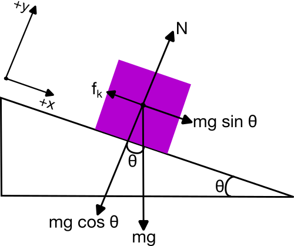
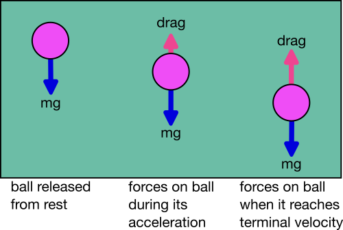

01 - Overture: What is Classical Physics?#

Handwritten Notes
Learning Goals#
After studying Lesson 01, you should be able to:
identify physical situations where classical mechanics can be applied by considering size and rapidity of change,
identify and share a form of classical physics that is new to you (e.g., not Hellenistic physics),
draw appropriate free body diagrams for different classical physics systems,
use Newton’s Second Law to setup the differential equations that model different classical physics systems, and
perform a Taylor expansion of a one dimensional function, \(F(v)\), around zero.
Where do we situate Classical Mechanics?#
There are many different fields of physics; they are both distinct and overlapping. If we were to take a view of what kinds of physical systems that we wanted to investigate with different physics, we could organize them based on the system’s size and speed of change:
Classical physics: large, slow systems
Statistical and quantum mechanics: small, slow systems
General relativity: large, fast systems
Quantum field theory: small, fast systems
These are not hard and fast rules, and, in fact, we often bring physics from different spaces together to solve complex problems. For examples, the fields of climate modeling, non-linear dynamics, astrophysics, and particle physics use physical models and tools for each of the fields above. How we organize physics for ourselves depends on how we decide we want to look at it. However the first view where we organize the field by size and speed is a useful way to think about the different kinds of physics that we have developed thus far. In fact, multi-scale modeling is an active area of research in physics, chemistry, biology, and engineering.
The figure below shows how we might organize physics by size and speed.

Fig. 1 Physics by size and speed showing that slower systems are classical, faster systems typically require relativity, and small systems are often quantized. SVG File#
{kind=link}
Plainly, Classical Physics is the physics that we developed before discovering relativity and quantum mechanics. It typically covers both mechanical systems and electromagnetic systems. It is also the physics that we read about historically, which has its roots in ancient astronomy and has existed across many different cultures.
Wherever there were people, there was Classical Physics.
You might have heard of the development physics in the Hellenistic age where the Greeks used mathematics to study astronomical objects, or how Newton’s Laws of motion came to be. These are both examples of classical physics, and they are quite common for American schools to teach, especially in science courses in our K12 school systems.
But there are many more including astronomical analyses in Sub-Saharan Africa in 300 BCE, massive scientific expansion in China during the Song dynasty, and studies that pushed the fields of optics, mechanics, and astronomy in the Islamic Golden Age.
While we do not often present it, much to the detriment of our own field, physics and astronomy were a large part of indigenous cultures across the world including in what become the United States.
Truly, wherever there were people, there was Classical Physics.
What is Classical Mechanics?#
When we define Classical Mechanics, at least for the purposes of undergraduate study, we will define it as the physics of large, slow, mechanical systems.
Large - Systems are typically big enough that we can see them with our eyes, or maybe with some reasonably simple optical tools. We’re typically excluding the microscopic world of atoms and molecules.
Slow – Systems for which we can observe their motion and track them “visually”; that is they move much slower than the speed of light. This is a critical assumption that we make in classical mechanics.
Mechanical – Systems where the fields of electromagnetism don’t come into play. We relax this is bit when we think of a particle in a classical E&M field, but the focus is still on modeling the particle and not the field.
Note on Classical Electromagnetism
We will not be studying Classical Electromagnetism (E&M) in this course, but it is worth noting that E&M is also a classical physics that deals with large, slow systems. However, complicating issues of E&M are typically not considered in Classical Mechanics, but include that the electromagnetic field carries energy and momentum, and particles can radiate energy.
We will use some ideas from Classical E&M in this course, but we will not be studying it directly. Where we do use it, we will typically treat E&M fields as given and, often, static, and thus we will focus on the motion of particles in those fields.
Modeling Large, Slow, Mechanical Systems#
Classical Mechanics is a physics that allows us to model these large, slow, mechanical systems.
Learning Classical Mechanics helps us develop an understanding of that process of making models and how we can use models to make predictions. It is a physics that results typically in deterministic models, where we can predict the future of a system given its current state. This is because the language of Classical Mechanics is differential equations, which describe how a system changes as a result of influences from its environment. It is often a vector-based physics as it describes the pushes and pulls on a system in a given direction. However, we can often develop scalar models or systems of scalar equations that describe the motion of a system.
The majority of our work will be developing systems of scalar, often nonlinear, differential equations that we will investigate with analytical and numerical tools.
Ultimately, Classical Mechanics is a physics that allows us to interrogate the behavior of these systems and describe their dynamics. Through Classical Mechanics, we can describe the present state of a system, how it will evolve, and then use that information to make predictions about the future. What we learn from Classical Mechanics can become a set of powerful tools that we can use in many contexts.
Applications of Classical Mechanics#
While it might appear there’s little room for using Classical Mechanics in research or in industry now, it turns out it is used everywhere. It is still the physics that enables us to understand fluid systems, nonlinear mechanical effects, continuum mechanics, animal locomotion, and many other systems and situations. Below are two examples of how Classical Mechanics is used in research and industry. We encourage to watch these videos as they demonstrate how the physics we will learn in class is central to continuing to understand nature.
Fluid Mechanics at LANL (6 minute video)
Researchers at Los Alamos National Lab do a variety of research using fluid mechanics models.
Biologically-Inspired Robotics (2 minute video)
A research lab at Georgia Tech uses Classical Mechanics to model the motion of animals and then uses that information to build robots that can move like animals.
Classical Mechanics in this Class#
Classical mechanics is a topic which has been taught intensively over several centuries. It is, with its many variants and ways of presenting the educational material, normally the first physics course many of us meet. Frequently, it lays the foundation for further physics studies. Many of the equations and ways of reasoning about the underlying laws of motion and pertinent forces, shape our approaches and understanding of the methods and discourse of science, as well as the way we develop our insights and deeper understanding about physical systems.
There are a wealth of well-tested (from both a physics point of view and a pedagogical standpoint) exercises and problems that can be solved analytically. And, indeed, you will solve a number of them. However, many of these problems represent idealized and less realistic situations. The large majority of these problems are solved by paper and pencil and are traditionally aimed at what we normally refer to as continuous models from which we may find an analytical solution. As a consequence, when teaching mechanics, it implies that we can seldomly venture beyond an idealized case in order to develop our understandings and insights about the underlying forces and laws of motion.
On the other hand, numerical algorithms call for approximate discrete models and much of the development of methods for continuous models are nowadays being replaced by methods for discrete models in science and industry, simply because much larger classes of problems can be addressed with discrete models, often by simpler and more generic methodologies. For example, numerical integration is an enormously important tool in physics, and it is a method that is based on discrete models.
Analytical and Numerical Models Compliment Each Other#
As we will see, when properly scaling the equations at hand, discrete models open up for more advanced abstractions and the possibility to study real life systems, with the added bonus that we can explore and deepen our basic understanding of various physical systems
Analytical solutions are as important as before. In addition, such solutions provide us with invaluable benchmarks and tests for our discrete models. Such benchmarks, as we will see, allow us to discuss possible sources of errors and their behaviors. And finally, since most of our models are based on various algorithms from numerical mathematics, we have a unique opportunity to gain a deeper understanding of the mathematical approaches we are using.
Computing is an Essential Tool for Physics#
With computing and data science as important elements in essentially all aspects of a modern society, we could then try to define Computing as solving scientific problems using all possible tools, including symbolic computing, computers and numerical algorithms, and analytical paper and pencil solutions. Computing provides us with the tools to develop our own understanding of the scientific method by enhancing algorithmic thinking.
The way we will teach this course reflects this definition of computing. The course contains both classical paper and pencil exercises as well as computational projects and exercises. The hope is that this will allow you to explore the physics of systems governed by the degrees of freedom of classical mechanics at a deeper level, and that these insights about the scientific method will help you to develop a better understanding of how the underlying forces and equations of motion and how they impact a given system. Furthermore, by introducing various numerical methods via computational projects and exercises, we aim at developing your competences and skills about these topics.
These competences will enable you to
understand how algorithms are used to solve mathematical problems,
derive, verify, and implement algorithms,
understand what can go wrong with algorithms,
use these algorithms to construct reproducible scientific outcomes and to engage in science in ethical ways, and
think algorithmically for the purposes of gaining deeper insights about scientific problems.
All these elements are central for maturing and gaining a better understanding of the modern scientific process per se.
What We Hope You Will Learn#
The power of the scientific method lies in identifying a given problem as a special case of an abstract class of problems, identifying general solution methods for this class of problems, and applying a general method to the specific problem (applying means, in the case of computing, calculations by pen and paper, symbolic computing, or numerical computing by ready-made and/or self-written software). This generic view on problems and methods is particularly important for understanding how to apply available, generic software to solve a particular problem.
However, verification of algorithms and understanding their limitations requires much of the classical knowledge about continuous models.
How do we formulate Classical Mechanics?#
In the past, you have learned about Newton’s Laws of Motion. These laws are the foundation of classical mechanics. They are used to describe the motion of objects in the universe. We will use these laws to describe the motion of particles and rigid bodies. As we progress, we will learn other formulations of classical mechanics, such as the Lagrangian and Hamiltonian reformulations.
Newton’s Laws of Motion are a vector formulation of classical mechanics. The laws are as follows:
First Law: An object at rest will remain at rest, and an object in motion will remain in motion at a constant velocity unless acted upon by an external force.
Second Law: The acceleration of an object is directly proportional to the net force acting on it and inversely proportional to its mass. The direction of the acceleration is in the direction of the net force.
Third Law: For every action, there is an equal and opposite reaction.
These are the classic laws of motion that you have learned in other courses. How we formulate these laws mathematically is our principle task.
Newton’s Second Law#
Newton’s Second Law provides the mathematical foundation for classical mechanics. It provides a vector relationship between the net force acting on an object and its acceleration. The law is given by the equation:
where \(\vec{F}_{net}\) is the net force acting on the object, \(m\) is the mass of the object, and \(\vec{a}\) is the acceleration of the object. This equation is a vector equation, meaning that it must be satisfied in each direction.
Each push in a Cartesian direction results in a proportional response – an acceleration in the same direction of the net push. Let’s go through a common example to illustrate this relationship.
Example: A Block on an Inclined Ramp#
Consider the box (mass, \(m\)) above on an inclined ramp (angle, \(\theta\)). The box is at rest subject to static friction, \(\mu_s\). What angle of inclination will cause the box to start sliding down the ramp?
We start by drawing the Free Body Diagram (FBD) of the box.
{kind=link}

Fig. 2 Free Body Diagram of Box on a Inclined Ramp; the arrows label the direction of forces acting on the box. SVG File#
{kind=link}
The FBD is a diagram that shows all the forces acting on the object. In this case, the forces acting on the box are:
The force of gravity, \(mg\), acting downwards.
The force due to the ramp, which is both perpendicular to the ramp surface (normal, \(N\)) and parallel to it (friction, \(f_k\)).
We tilt our coordinate system to align with the ramp. This makes the normal force, \(N\), act in the \(y\)-direction and the frictional force, \(f_k\), act in the \(x\)-direction. The force of gravity is split into two components: \(mg\sin(\theta)\) and \(mg\cos(\theta)\).
The net force acting on the box is the sum of the forces acting on it, and is zero up to the point where the box starts sliding. At this point, the frictional force is at its maximum value, \(\mu_s N\). Taking the sum of the forces acting on the box in each direction we have:
Thus,
At the point where the box starts sliding, the frictional force is at its maximum value, \(\mu_s N\). Thus, the box starts sliding when:
Substituting the expressions for \(f\) and \(N\) into the equation above, we have:
Solving for \(\theta\):
Thus, the box starts sliding when the angle of inclination is equal to the arctangent of the coefficient of static friction.
Check
We can check this with some numbers. Steel as a static friction coefficient of about 0.16, and rubber is closer to 0.8. Thus, the angle of inclinations for steel and rubber are:
It seems quite reasonable that rubber would have a higher angle of inclination before sliding than steel.
Tip
A few things to note about this problem:
This was a static problem, such that \(\vec{F}_{net} = 0\).
We rotated our coordinate system to align with the ramp. This is a common technique in classical mechanics to simplify the problem.
We still used Cartesian coordinates to solve the problem. This is because the forces could be easily decomposed in the titled coordinate system.
Let’s work an example that is dynamic, where the net force is not zero.
Example: Falling Object in One Dimension#
Consider an object of mass \(m\) falling, but it is subject to air resistance. The free body diagram of the object shows that the forces acting on the object are:
The force of gravity/weight, \(W=mg\), acting downwards.
The force due to air resistance, \(F_{air}\), acting upwards.
{kind=link}

Fig. 3 Free Body Diagram of Falling Object; the arrows label the direction of forces acting on the object. SVG File#
{kind=link}
Here we have chosen positive \(y\) to be the downward direction. We want to predict the motion (\(a\), \(v\), \(y\)) of the object as a function of time. This is a very common problem for classical mechanics.
Air Drag?#
First, we notice that we do not know the force due to air resistance. We do know that the force is related to the velocity of the object. So let’s start by writing the air resistance force as a function of velocity:
where \(F(v)\) is some function of velocity.
Taylor Series Expansion#
Because we know that the objects move slowly in classical mechanics, we can assume that the function can be expanded using a Taylor Series. In general, the Taylor Series of a function \(f(x)\) about a point \(a\) is given by:
where \(f^{(n)}(a)\) is the \(n\)-th derivative of \(f(x)\) evaluated at \(x=a\). We can write the first few terms out,
Because we know that the object is moving slowly, we can expand the function \(F(v)\) about \(v=0\):
We can assume that the first term is zero, \(F(0)=0\), because there is no air resistance when the object is at rest. Thus, the force due to air resistance is approximately:
We call the first term the linear drag term and the second term the quadratic drag term. The linear drag term is proportional to the velocity of the object, and the quadratic drag term is proportional to the square of the velocity of the object. We also typically replace the evaluated derivatives with constants, \(b\) and \(c\) – because they are constants that depend on the object and the fluid it is moving through. And thus,
Back to Newton’s Second Law#
In the \(y\)-direction, the net force acting on the object is:
And thus, the acceleration of the object is:
This differential equation can be written in a variety of ways. One common way is to write the equation as a second-order differential equation.
Note that this is a nonlinear differential equation (i.e., there’s a \((d^ny/dt^n)^m\) term where \(m > 1\)), which are notoriously difficult to solve in general. We can write it using the dot notation for derivatives (i.e., \(\dot{y} = dy/dt\), \(\ddot{y} = d^2y/dt^2\)):
We can also use the velocity as the independent variable, \(v = \dot{y}\). Both equations below are equivalent:
Tip
A few things to note:
This is a dynamic one-dimensional problem, such that \(\vec{F}_{net} \neq 0\).
This is a nonlinear problem, such that the acceleration is a function of the velocity of the object.
We are stuck with a differential equation that we need to solve, and don’t have a simple algebraic solution (e.g., a simple antiderivative).
How do we solve this equation to find the motion of the object as a function of time? We will come back to this, but solving differential equations is the primary tool of classical mechanics. We will learn how to solve these equations analytically and numerically in this course.